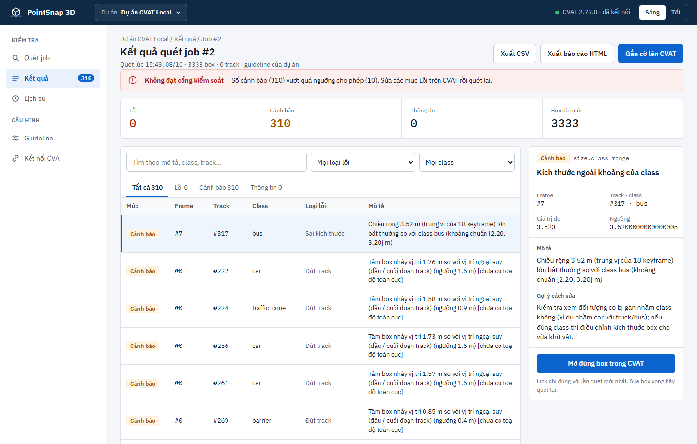
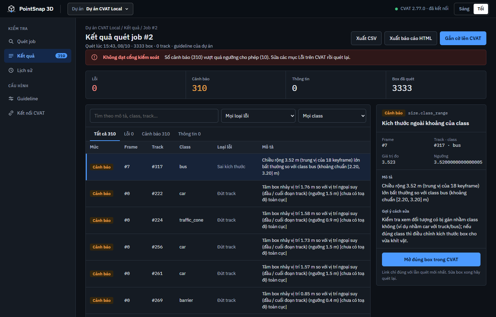
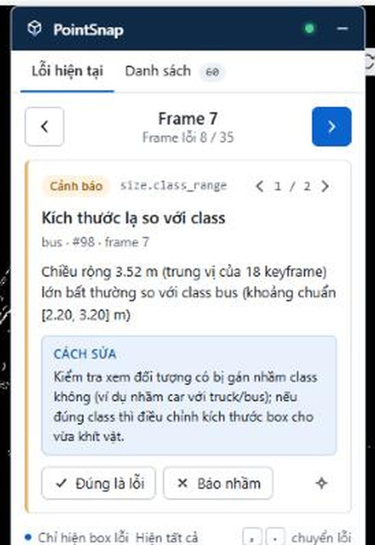

Bắt sai class, sai kích thước ≥ 15%, nhảy ≥ 2 m
MỚI · Box Verifier — AI tự huấn luyện
Bắt lỗi nhãn 3D
Bắt lỗi nhãn 3D
trước khi bị trả về.
PointSnap đối chiếu từng box với point cloud LiDAR, track, ảnh camera và spec gán nhãn — rồi gắn cờ thẳng lên box lỗi trong CVAT.
Nhấn Enter để vào ứng dụng.
Python 3.11CVAT 2.77nuScenesChrome / Edge
100%bắt sai class
30/30lỗi lớn đúng mức
7–20squét một cảnh
LIDAR_TOP · scene-0103 · frame 23 / 40
scan 7.4 s
LỖI · floatingLơ lửng 26 cm
Lỗi 1
Cảnh báo 0
Đạt 4
⟲ Kéo để xoay 360°
VF8 · 4.75 × 1.93 × 1.67 m · car · OK
⟲ 360° · kéo để xoay
SINH RA CHO XE TỰ LÁI
Dữ liệu sạch là nền móng của mọi chiếc xe tự lái.
Mỗi box sai trong tập huấn luyện là một lần mô hình nhìn nhầm ngoài đường. PointSnap giúp đội gán nhãn bắt lỗi ngay khi còn trên CVAT — trước khi dữ liệu vào huấn luyện.
- ~40keyframe mỗi cảnh LiDAR
- 7–20 scho một lần quét toàn cảnh
- 5 440box trên 5 cảnh kiểm tra
TÍNH NĂNG
Bảy nhóm lỗi. Một lần quét. Sửa một lần bấm.
Mỗi luật đo bằng hình học trên point cloud, track và ảnh camera — có ngưỡng, có bằng chứng, chỉnh được theo guideline của từng dự án.
CÁCH HOẠT ĐỘNG
Từ gán nhãn đến nộp — không rời CVAT.
Một vòng lặp ngắn: quét, gắn cờ, sửa ngay trong CVAT, qua cổng kiểm tra rồi mới nộp.
- ✎BƯỚC 01
Gán nhãn trên CVAT
Annotator vẽ cuboid 3D như mọi ngày — không đổi quy trình.
- ⌕BƯỚC 02
Quét & gắn cờ
Bấm Quét job trên web (hoặc
pointsnap scan --flag) — lỗi được ghi vào thuộc tínhpointsnap_errorcủa đúng box. - ⚑BƯỚC 03
Sửa ngay trong CVAT
Extension tự lọc box có cờ; phím . / , nhảy tới frame lỗi; có đề xuất sửa thì áp dụng 1 lần bấm, hoàn tác được.
- ✓BƯỚC 04
Qua cổng rồi nộp
Quét lại: cổng kiểm soát trả ĐẠT / KHÔNG ĐẠT theo tiêu chí của dự án (
pointsnap gatecho CI).
🛡 Tool đề xuất, con người quyết định — PointSnap không tự sửa box: chỉ ghi lên CVAT khi bạn bấm xác nhận, và luôn có snapshot để hoàn tác.
KẾT QUẢ
Con số, không phải lời hứa.
Đo bằng lỗi chèn giả trên 5 cảnh nuScenes để kiểm tra — 5 440 box, chưa từng dùng để chỉnh ngưỡng, 10 vòng.
Lỗi lớn được báo đúng mức Lỗi
Quét một cảnh ~40 keyframe
Bắt lật / xoay box 60 – 180°
Chưa tốt: lỗi nhỏ (xoay 15 – 30°, dời < 1 m) và báo nhầm lơ lửng ở bờ vỉa, LiDAR thưa — đang cải thiện.
3 CÁCH DÙNG
Dùng theo cách bạn làm việc.



ĐỘI NGŨ
Đội ngũ đứng sau PointSnap.
Năm người, một người bí ẩn — và một mục tiêu: không để box sai nào lọt vào tập huấn luyện.
Team P-029 · AI20K Build Phase · Cohort 4A
BẮT ĐẦU
Vào việc trong 1 phút.
Chạy trên máy bạn, đọc CVAT qua REST API — dữ liệu không rời khỏi máy.
Lần đầu: tạo dự án (URL CVAT + token) → quét một job → mở job trên CVAT để sửa bằng extension.
Extension Chrome / Edge
- Mở
chrome://extensions(Edge:edge://extensions) - Bật Developer mode
- Load unpacked → chọn thư mục
extension/
>_PointSnap · Python 3.11
$ pip install -e . $ pointsnap ui # mở 127.0.0.1:8765
HỎI ĐÁP
Câu hỏi thường gặp.
Không thấy câu trả lời? Mở issue trên GitHub của dự án.
PointSnap có tự sửa box không?
Không tự sửa. Khi quét, PointSnap chỉ ghi thuộc tính pointsnap_error lên box lỗi; cờ tự xóa khi box hết lỗi. Với box có đề xuất sửa (Δz, Δyaw, kích thước), PointSnap chỉ ghi lên CVAT khi bạn bấm Áp dụng và xác nhận — mỗi lần đều lưu snapshot để Hoàn tác, và từ chối ghi nếu box vừa bị người khác sửa.
Cần những gì để chạy?
Python 3.11 và một CVAT có token API. Muốn thử ngay không cần CVAT: dùng nuScenes v1.0-mini với pointsnap nuscenes … scan --inject để chèn lỗi giả rồi quét.
Có chỉnh theo guideline riêng của dự án được không?
Có. Bật / tắt từng luật, đổi ngưỡng, class và thuộc tính bắt buộc ngay trên giao diện, hoặc dán file YAML (ví dụ spec-vn.yaml cho bộ nhãn giao thông VN).
Tích hợp vào CI thế nào?
pointsnap gate --job 12 trả mã thoát 0 = ĐẠT, 1 = KHÔNG ĐẠT — đặt vào pipeline để chặn nộp khi còn lỗi.